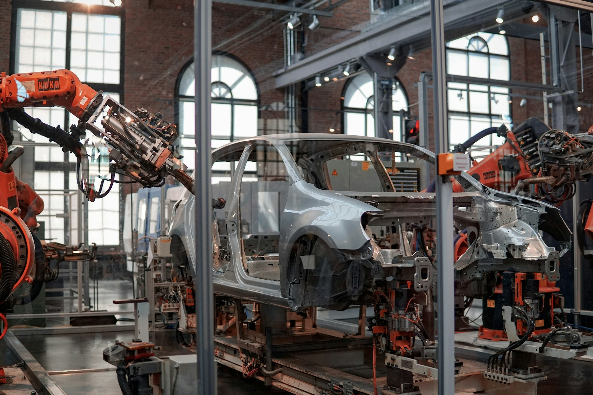
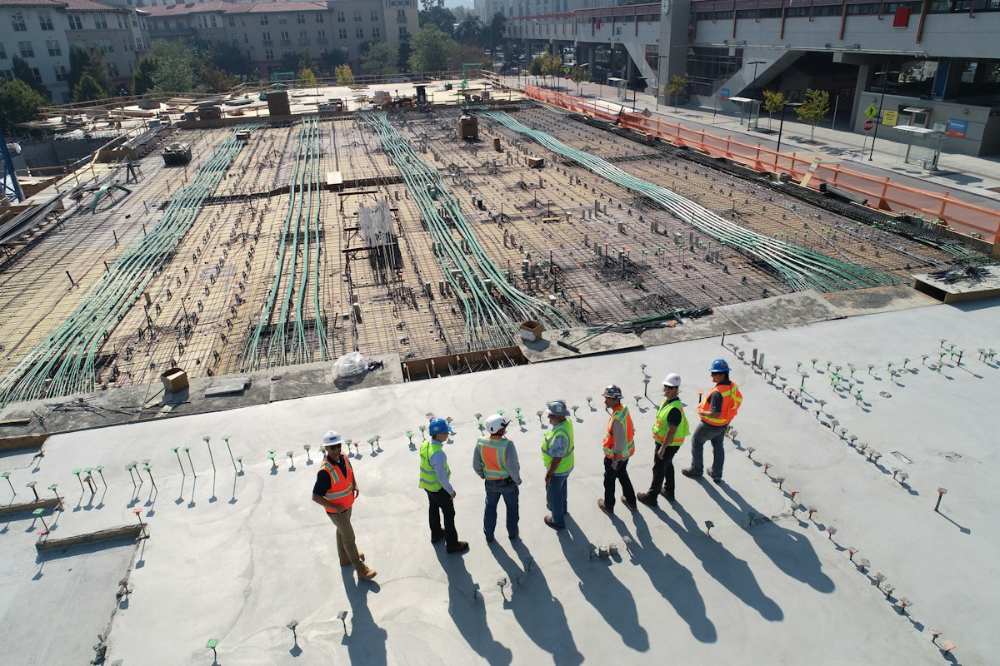
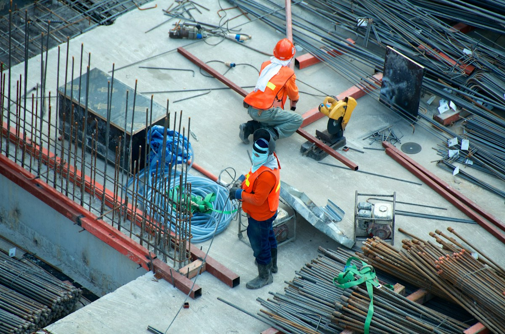
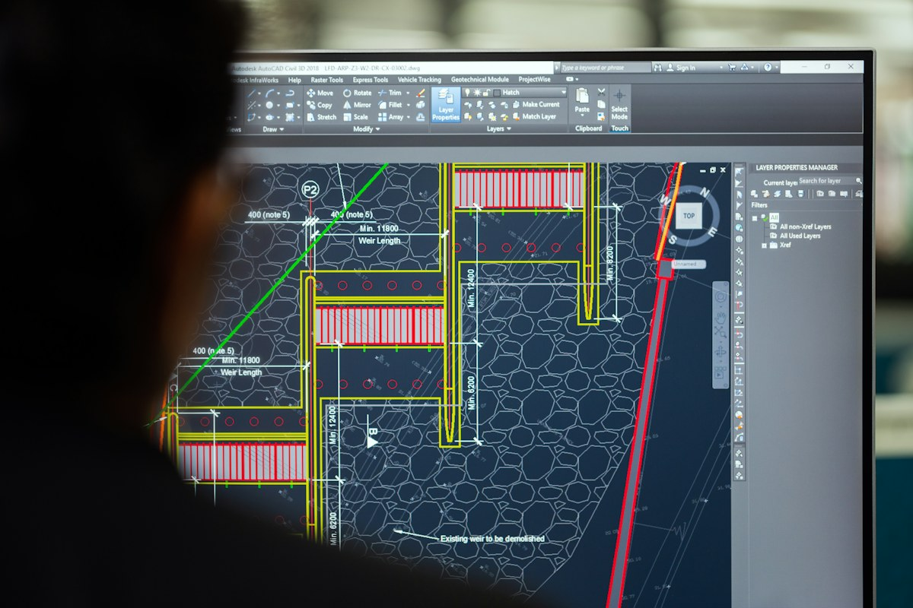

Industrial equipment & machinery
Equipment selection and supply planning aligned with the task, site and operating requirements.
Equipment · Engineering · Project delivery
Equipment, technical expertise and coordinated support for the places where industry and infrastructure take shape.
A fictional industrial company concept. No client work or company claims are represented.

Practical capability
The right equipment is only one part of a successful operation.
TerraForge is a fictional industrial solutions company created for this portfolio demonstration. Its concept brings procurement, engineering and project coordination together, with attention to the people and practical demands on site.
What we support
Practical services for industrial operations, construction programmes and technical project teams.
Equipment selection and supply planning aligned with the task, site and operating requirements.
Technical coordination, practical assessments and support for informed project decisions.
Coordination support for built environments, industrial facilities and infrastructure work.
Planned servicing and maintenance support intended to help keep essential equipment ready.
Source and coordinate equipment, components and technical supplies to a clear brief.
Structured planning, supplier coordination and project support from scope to handover.
Across the built world
Illustrative sector imagery only. These examples do not represent completed TerraForge projects or clients.


Illustrative photography via Unsplash.
A clear way forward
Every engagement starts with the scope, constraints and practical realities of the work—not a one-size-fits-all package.

Align on the operating context, required equipment and project outcomes.
Bring together technical considerations, sourcing and delivery planning.
Keep communication clear as equipment, people and site work come together.
Consider maintenance, handover and the support needed after installation.
Start a conversation
TerraForge is a fictional demonstration brand. This link reaches Abel Thomas through the portfolio contact page.
Discuss a project